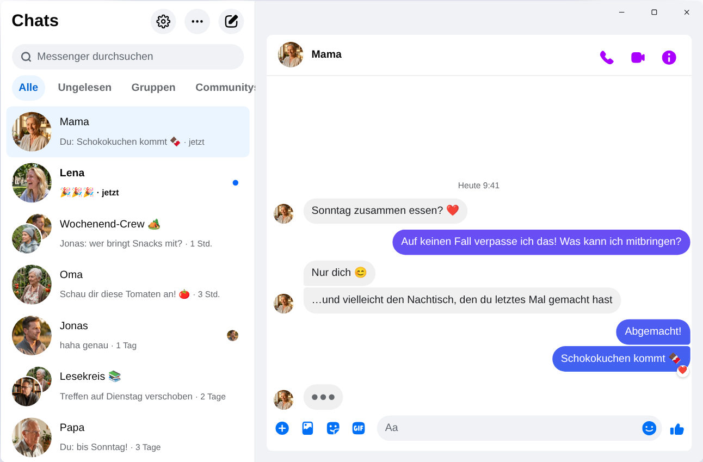

Chatpane / Windows
Stand: November 2026
So nutzt du den Facebook Messenger 2026 am PC
Meta hat die Messenger-App für Windows am 15. Dezember 2025 abgeschaltet, und messenger.com leitet inzwischen zu Facebook weiter. Das funktioniert heute noch auf einem PC oder Laptop mit Windows 10 oder 11.
Kostenlos und Open Source · Windows 10 und 11 · Keine App von Meta
Kurz gesagt
Eine offizielle Messenger-App für den PC gibt es nicht mehr. Meta hat sie aus dem Microsoft Store entfernt, und seit April 2026 läuft der Messenger am Computer nur noch unter facebook.com/messages, also mitten in Facebook.
Wenn du den Messenger in einem eigenen Fenster willst, ohne Feed und Reels, ist Chatpane eine kostenlose Open-Source-App für Windows, die deine Chats zeigt und sonst nichts. Chatpane ist ein unabhängiges Projekt und gehört nicht zu Meta.
Warum alte Anleitungen nicht mehr funktionieren
Viele Anleitungen raten noch, den Messenger im Microsoft Store zu suchen, und Download-Portale bieten weiterhin den Installer „Messenger 2250.1“ an. Das ist genau die App, die Meta im Dezember 2025 abgeschaltet hat: Nach dem Start schickt sie dich nur zu Facebook weiter. Die Installation bringt dir nichts.
Gib dein Facebook-Passwort außerdem nie in Programme oder auf Seiten ein, deren Herkunft du nicht kennst. Wenn dir jemand einen „Messenger für PC“ mit eigenem Anmeldefenster anbietet, sei vorsichtig.
Was ist mit dem Messenger für Windows passiert?
2024 hat Meta die Windows-App durch eine verpackte Web-Version ersetzt. Im Oktober 2025 kündigte Meta das Aus an und nahm die App aus dem Microsoft Store, am 15. Dezember 2025 hörte sie auf zu funktionieren. Im April 2026 folgte messenger.com. Alle Daten und Details findest du unter Messenger-Desktop-App eingestellt.
Deine Möglichkeiten
So nutzt du den Messenger unter Windows
Chatpane unter Windows
Chatpane öffnet denselben Messenger wie dein Browser. Deine Chats, Gruppen, Anrufe und Fotos sind alle da und bleiben mit deinem Handy synchron. Weg ist nur der Rest von Facebook.
- Nur Messenger. Feed, Reels, Marketplace und die Facebook-Suche sind ausgeblendet.
- Nützliche Benachrichtigungen. Antworte, reagiere, markiere als gelesen oder schalte stumm, direkt aus der Benachrichtigung und ohne das Fenster zu öffnen. Praktisch, wenn du über den Marketplace verkaufst und keine Anfrage verpassen willst.
- Taskleiste und Infobereich. Die Zahl ungelesener Nachrichten am Symbol, Start mit Windows und auf Wunsch Weiterlaufen im Infobereich, wenn du das Fenster schließt.
- Datenschutz. Verbirg, dass du tippst, blende Namen und Profilbilder aus, wenn du deinen Bildschirm teilst, und blockiere die Analyse-Anfragen von Facebook (standardmäßig aktiv).
- Offener Code. Chatpane ist Open Source unter der MIT-Lizenz. Der Code liegt auf GitHub, und jeder kann nachprüfen, was die App macht.
- Auf Deutsch. Chatpane folgt der Sprache deines Computers, deshalb erscheinen Menüs und Einstellungen auf Deutsch.

So installierst du Chatpane
- Lade den Installer für Windows herunter. Hat dein PC einen ARM-Prozessor, nimm den ARM64-Installer.
- Starte ihn. Die Windows-Installer von Chatpane sind noch nicht digital signiert, deshalb zeigt SmartScreen eventuell „Der Computer wurde durch Windows geschützt“. Klicke auf „Weitere Informationen“ und dann auf „Trotzdem ausführen“. Lade Chatpane nur von chatpane.app oder GitHub herunter.
- Melde dich mit deinem gewohnten Facebook-Konto an. Deine Chats erscheinen sofort.
Du willst nichts installieren? Die portable Version (.zip) läuft ohne Installer.
Häufige Fragen
Fragen zum Messenger am PC
Ist Chatpane kostenlos?
Ja. Kein Preis, kein Abo, keine Werbung. Chatpane ist Open Source unter der MIT-Lizenz, und der Code liegt öffentlich auf GitHub, damit ihn jeder prüfen kann.
Ist das die offizielle Messenger-App?
Nein. Chatpane ist ein unabhängiges Projekt ohne Verbindung zu Meta. Es zeigt den echten Messenger von facebook.com/messages in einem eigenen Fenster. Deine Nachrichten laufen also weiterhin über den Messenger, und es gelten die Bedingungen von Meta.
Funktioniert das ohne Facebook-Konto?
Nein. Seit April 2026 lässt Meta den Messenger ohne Facebook-Konto nur noch in der Handy-App zu. Am Computer brauchen Chatpane und jede andere Lösung ein Konto, das sich bei facebook.com anmelden kann.
Läuft Chatpane unter Windows 10?
Ja, unter Windows 10 und 11. Chatpane nutzt Microsoft Edge WebView2, das in Windows 11 schon enthalten ist. Unter Windows 10 lädt der Installer es herunter, falls es fehlt.
Kann ich Videoanrufe machen?
Ja. Es ist der komplette Messenger, deshalb öffnen sich Sprach- und Videoanrufe in einem eigenen Fenster, genau wie auf facebook.com.
Chatpane holen
Kostenlos und Open Source. In Sekunden heruntergeladen - die App ist nur etwa 4 MB groß.
Älterer Intel-Mac? Intel .dmg
Die vollständige Liste mit Prüfsummen findest du auf
GitHub
- oder brew install --cask kristofferR/tap/chatpane